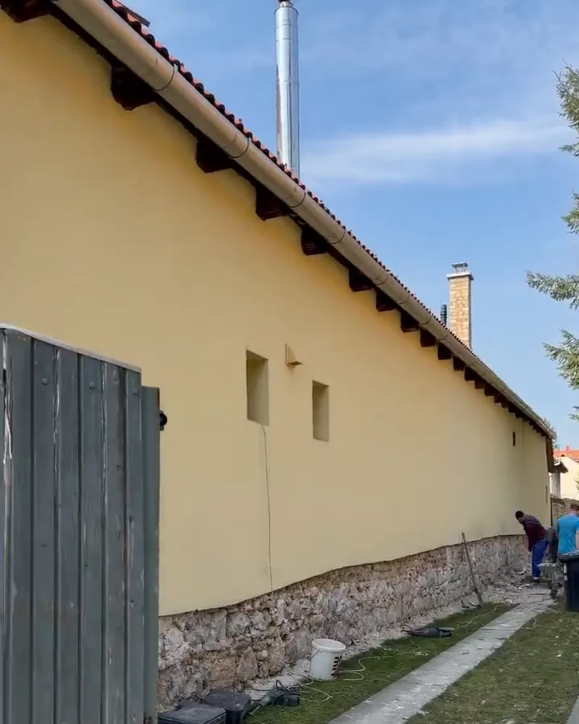

Saját munka · képkockák a bemutatkozó videóból
Salétromos lábazat, lélegző fal
- LeverésA régi ház alapját, lábazatát le kellett verni, mert salétromos volt.
- SzellőztetésA sérült részt eltávolították, a fal egy ideig kiszellőzik.
- Könnyű vakolatUtána egy könnyű vakolatréteget kap.
- MészhabarcsVégül mészhabarcs kerül rá, hogy a fal tudjon levegőzni.